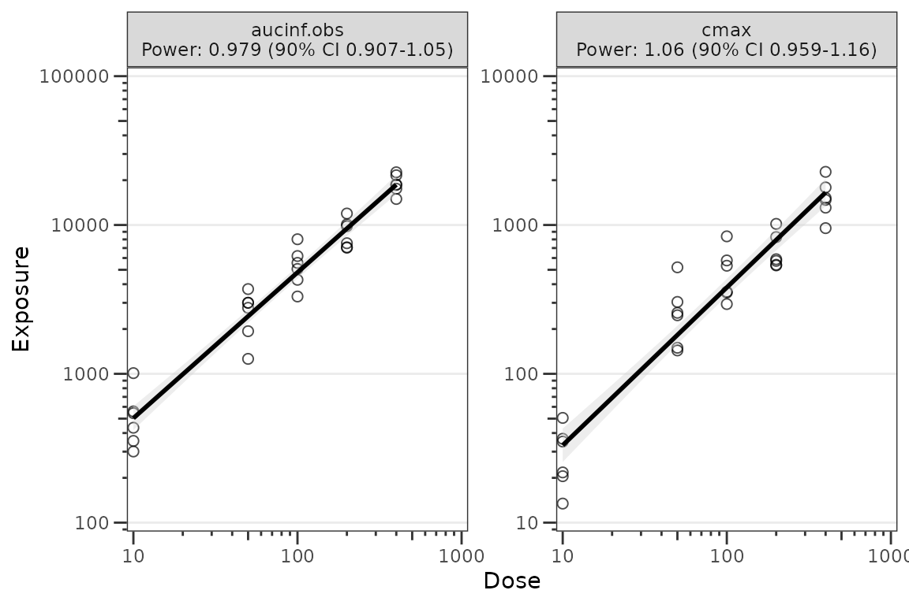
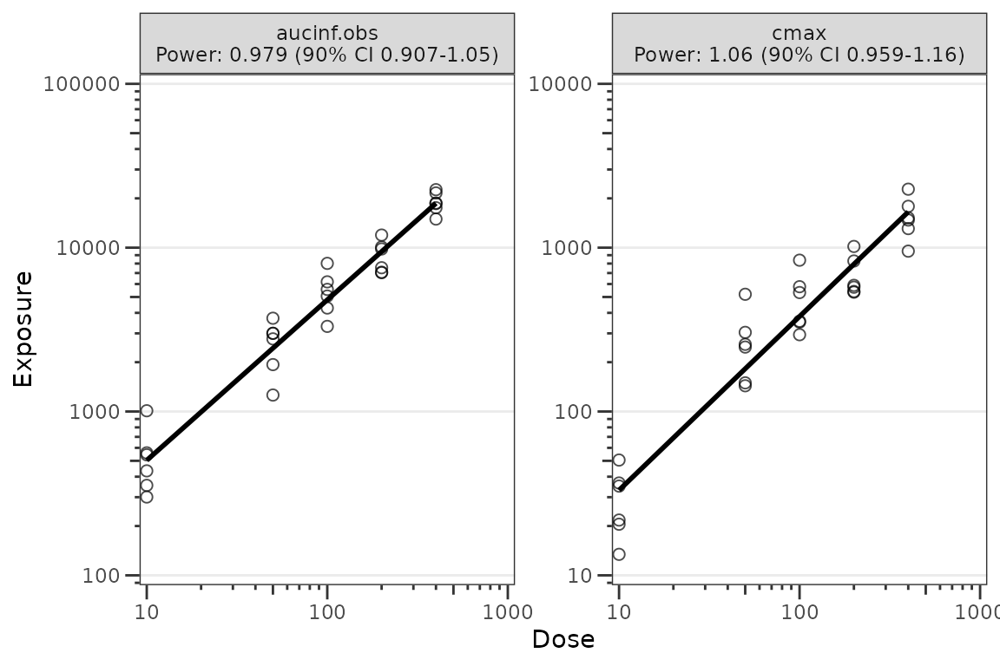
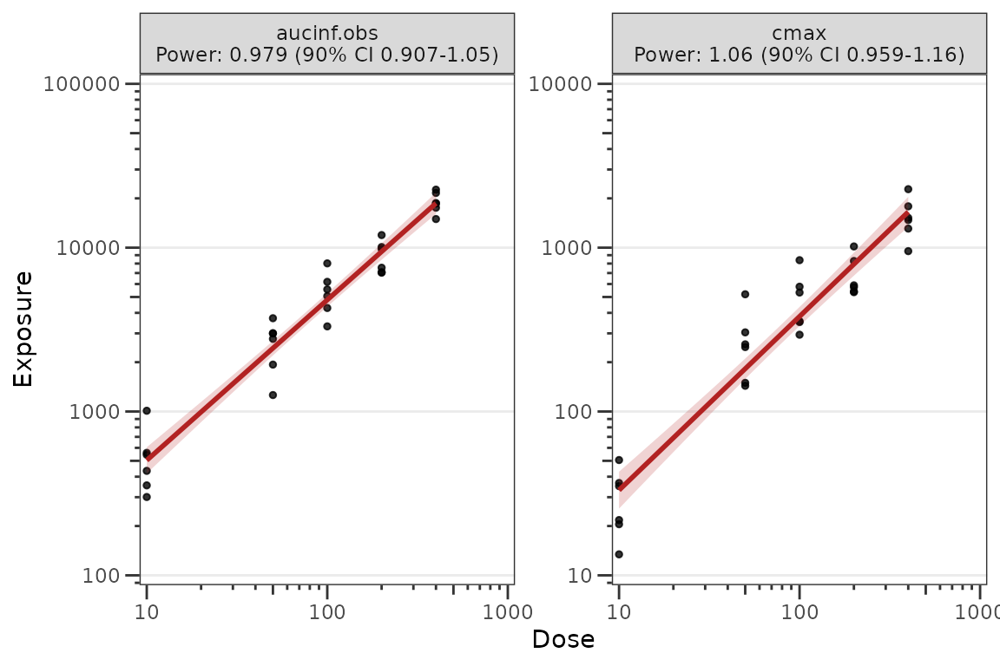

Dose-Proportionality Workflow
Source:vignettes/articles/doseprop-workflow.Rmd
doseprop-workflow.RmdThis vignette demonstrates the pmxhelpr
dose-proportionality assessment workflow using power law (log-log)
regression of exposure versus dose.
The pipeline mirrors the VPC
workflow: a stats function (df_doseprop()) returns a
class-tagged object, a public renderer
(plot_build_doseprop()) draws plots from that object, and a
top-level wrapper (plot_doseprop()) bundles both for
one-shot use.
options(scipen = 999, rmarkdown.html_vignette.check_title = FALSE)
library(pmxhelpr)
library(dplyr, warn.conflicts = FALSE)
library(ggplot2, warn.conflicts = FALSE)Background
Dose proportionality assessment evaluates whether exposure increases proportionally with dose. The standard approach is power law regression on the relationship
which linearizes via log transformation to
Hypothesis testing proceeds via the confidence interval around the power estimate (): the null is dose-proportional (); the alternative is non-proportional (). Interpretation rules of thumb:
- CI includes 1: dose-proportional
- CI excludes 1, upper bound below 1: less than dose-proportional
- CI excludes 1, lower bound above 1: greater than dose-proportional
This assessment is typically performed on both Cmax and AUC. The combination informs which phase of the PK profile is contributing most to non-linearity (absorption rate, absorption extent, or elimination).
Data
This vignette uses the internal data_sad_nca dataset,
which is the NCA parameter output for the data_sad SAD +
food-effect study. The dataset is formatted in the SDTM PP
(Pharmacokinetic Parameters) domain conventions, with one row per
subject per parameter.
glimpse(data_sad_nca)
#> Rows: 648
#> Columns: 11
#> $ ID <dbl> 1, 1, 1, 1, 1, 1, 1, 1, 1, 1, 1, 1, 1, 1, 1, 1, 1, 1, 2, 2,…
#> $ DOSE <dbl> 10, 10, 10, 10, 10, 10, 10, 10, 10, 10, 10, 10, 10, 10, 10,…
#> $ PART <chr> "Part 1-SAD", "Part 1-SAD", "Part 1-SAD", "Part 1-SAD", "Pa…
#> $ start <dbl> 0, 0, 0, 0, 0, 0, 0, 0, 0, 0, 0, 0, 0, 0, 0, 0, 0, 0, 0, 0,…
#> $ end <dbl> Inf, Inf, Inf, Inf, Inf, Inf, Inf, Inf, Inf, Inf, Inf, Inf,…
#> $ PPTESTCD <chr> "auclast", "cmax", "tmax", "tlast", "clast.obs", "lambda.z"…
#> $ PPORRES <dbl> 277.7701457207, 13.4300000000, 7.8100000000, 35.9500000000,…
#> $ exclude <chr> NA, NA, NA, NA, NA, NA, NA, NA, NA, NA, NA, NA, NA, NA, NA,…
#> $ units_dose <chr> "mg", "mg", "mg", "mg", "mg", "mg", "mg", "mg", "mg", "mg",…
#> $ units_conc <chr> "ng/mL", "ng/mL", "ng/mL", "ng/mL", "ng/mL", "ng/mL", "ng/m…
#> $ units_time <chr> "hours", "hours", "hours", "hours", "hours", "hours", "hour…For dose-proportionality assessment we want to focus on the SAD cohort and exclude the food-effect arm — food can also influence exposure and may confound dose-proportionality interpretation.
Computing summary statistics with df_doseprop()
The required arguments are:
-
data— adata.frameof NCA parameters (typicallyPKNCA::pk.nca()output) -
metrics— character vector of exposure metric names to evaluate
dose_prop_obj <- df_doseprop(data_nca1, metrics = c("aucinf.obs", "cmax"))
dose_prop_obj
#> <doseprop_stats>
#> stats: 2 rows x 10 columns
#> obs: 60 rows
#> config: metric_name_var = PPTESTCD, metric_value_var = PPORRES, dose_var = DOSE, ci = 0.9, method = normal
#>
#> stats body:
#> Intercept StandardError CI Power LCL UCL Proportional
#> 1 3.97 0.0438 90% 0.979 0.907 1.05 TRUE
#> 2 1.06 0.0616 90% 1.060 0.959 1.16 TRUE
#> PowerCI Interpretation PPTESTCD
#> 1 Power: 0.979 (90% CI 0.907-1.05) Dose-proportional aucinf.obs
#> 2 Power: 1.06 (90% CI 0.959-1.16) Dose-proportional cmax
#>
#> Use `x$obs` for the observation overlay.Optional arguments must be specified if input dataset defaults differ
from SDTM formatting and PKNCA defaults:
-
metric_name_var: variable indatacontaining metric names requested inmetrics, defaultPPTESTCD. -
metric_value_var: variable indatacontaining exposure metric values, defaultPPORRES.
The default argument for the numeric dose variable
dose_var is DOSE.
stats <- dose_prop_obj$stats
stats
#> Intercept StandardError CI Power LCL UCL Proportional
#> 1 3.97 0.0438 90% 0.979 0.907 1.05 TRUE
#> 2 1.06 0.0616 90% 1.060 0.959 1.16 TRUE
#> PowerCI Interpretation PPTESTCD
#> 1 Power: 0.979 (90% CI 0.907-1.05) Dose-proportional aucinf.obs
#> 2 Power: 1.06 (90% CI 0.959-1.16) Dose-proportional cmaxThe stats slot holds the per-metric estimates from the
log log regression, which contains all the information needed to format
an output table.
Adjusting the summary statistics
The summary statistics calculated from the log-log regression of exposure versus dose can be customized using the following arguments:
-
method: distribution used to calculate the confidence interval: Default is"normal". Alternative is"tdist", which may be preferred for analysis with a small sample size where normality cannot be assumed (e.g, < 30). -
ci: confidence interval to return expressed as a proportion. Default is"0.9"based on the CI recommended for the bioequivalence assessment. -
sigdigits: number of significant digits to return in outputs
The example below modifies the previous calculation by requesting the
tdist method, 95%, and rounding to only 2 significant
digits.
dose_prop_obj_95ci_tdist <- df_doseprop(data_nca1,
metrics = c("aucinf.obs", "cmax"),
method = "tdist",
ci = 0.95,
sigdigits = 2)
dose_prop_obj_95ci_tdist
#> <doseprop_stats>
#> stats: 2 rows x 10 columns
#> obs: 60 rows
#> config: metric_name_var = PPTESTCD, metric_value_var = PPORRES, dose_var = DOSE, ci = 0.95, method = tdist
#>
#> stats body:
#> Intercept StandardError CI Power LCL UCL Proportional
#> 1 4.0 0.044 95% 0.98 0.89 1.1 TRUE
#> 2 1.1 0.062 95% 1.10 0.93 1.2 TRUE
#> PowerCI Interpretation PPTESTCD
#> 1 Power: 0.98 (95% CI 0.89-1.1) Dose-proportional aucinf.obs
#> 2 Power: 1.1 (95% CI 0.93-1.2) Dose-proportional cmax
#>
#> Use `x$obs` for the observation overlay.Plotting with plot_doseprop()
plot_doseprop() is the top-level wrapper that bundles
df_doseprop() and plot_build_doseprop(). The
required arguments are the same as df_doseprop(). The
output is a ggplot object with one panel per metric, where
the facet label includes the metric name and the PowerCI
text.
plot_doseprop(data_nca1, metrics = c("aucinf.obs", "cmax"))
The default appearance uses open circles at alpha = 0.7
for the observation points and a black regression line with a grey SE
ribbon. This matches the package design language for exploratory plots.
To restore filled black circles with full opacity, override
obs_point via the theme argument (see Theming below).
Adjusting the summary statistics
The summary statistics calculated from the log-log regression of exposure versus dose can be customized using the following arguments:
-
method: distribution used to calculate the confidence interval: Default is"normal". Alternative is"tdist", which may be preferred for analysis with a small sample size where normality cannot be assumed (e.g, < 30). -
ci: confidence interval to return expressed as a proportion. Default is"0.9"based on the CI recommended for the bioequivalence assessment. -
sigdigits: number of significant digits to return in outputs
plot_doseprop(data_nca1,
metrics = c("aucinf.obs", "cmax"),
method = "tdist",
ci = 0.95,
sigdigits = 2)Reusing precomputed stats
plot_doseprop() also accepts a
doseprop_stats object directly. This skips the regression
refit and is useful when you want to inspect the stats object and then
render the same data multiple times — for example, with and without the
SE ribbon, or with different aesthetic overrides — without paying the
regression cost again.
# With the SE ribbon (default)
plot_doseprop(dose_prop_obj)
# Without the SE ribbon
plot_doseprop(dose_prop_obj, se = FALSE)
When data is a precomputed doseprop_stats
result, the pipeline arguments (metrics,
metric_name_var, metric_value_var,
dose_var, method, ci,
sigdigits) cannot be honored — those
decisions were already made when df_doseprop() ran, and
re-passing them on the cached path would silently shadow the original
values. Passing any of them aborts with a message pointing the caller
back at df_doseprop(). Only plot-only arguments
(theme, se) are accepted on this path; to
change a regression setting, re-run df_doseprop() and pass
the new result.
Inspecting the doseprop_stats object
df_doseprop() performs the per-metric log-log regression
and returns a doseprop_stats
[pmx_stats][is_pmx_stats] object with three slots:
-
stats(one row per metric), -
obs(the observation rows used for the scatter overlay) -
config(the regression configuration). Downstream plot builders read directly from these slots to render without a refit.
The returned object is class-tagged
c("doseprop_stats", "pmx_stats"), which provides three S3
methods designed for interactive inspection.
print() shows a focused summary — object dimensions, the
regression configuration values (metric_name_var,
metric_value_var, dose_var, ci,
method), the count of observation rows attached for the
scatter overlay, and the per-metric stats body.
print(dose_prop_obj)
#> <doseprop_stats>
#> stats: 2 rows x 10 columns
#> obs: 60 rows
#> config: metric_name_var = PPTESTCD, metric_value_var = PPORRES, dose_var = DOSE, ci = 0.9, method = normal
#>
#> stats body:
#> Intercept StandardError CI Power LCL UCL Proportional
#> 1 3.97 0.0438 90% 0.979 0.907 1.05 TRUE
#> 2 1.06 0.0616 90% 1.060 0.959 1.16 TRUE
#> PowerCI Interpretation PPTESTCD
#> 1 Power: 0.979 (90% CI 0.907-1.05) Dose-proportional aucinf.obs
#> 2 Power: 1.06 (90% CI 0.959-1.16) Dose-proportional cmax
#>
#> Use `x$obs` for the observation overlay.summary() shares the header but condenses the body to
one line per metric using the PowerCI and
Interpretation columns. This is the most compact way to
scan the assessment.
summary(dose_prop_obj)
#> <doseprop_stats>
#> stats: 2 rows x 10 columns
#> obs: 60 rows
#> config: metric_name_var = PPTESTCD, metric_value_var = PPORRES, dose_var = DOSE, ci = 0.9, method = normal
#>
#> per-metric:
#> aucinf.obs: Power: 0.979 (90% CI 0.907-1.05) -- Dose-proportional
#> cmax: Power: 1.06 (90% CI 0.959-1.16) -- Dose-proportionalas.data.frame() returns the stats slot as a
plain data.frame — useful when downstream tooling expects a
flat tabular result. The observation overlay and run configuration
remain accessible via dose_prop_obj$obs and
dose_prop_obj$config.
plain <- as.data.frame(dose_prop_obj)
class(plain)
#> [1] "data.frame"
dose_prop_obj$config$metric_name_var
#> [1] "PPTESTCD"Use is_doseprop_stats() to test class membership
programmatically — for example, in user code that should accept either a
precomputed doseprop_stats object or a raw NCA data.frame.
Pass strict = TRUE to additionally validate structural
integrity.
is_doseprop_stats(dose_prop_obj)
#> [1] TRUE
is_doseprop_stats(plain) # FALSE -- coerced to a plain data.frame
#> [1] FALSETheming
Plot aesthetics are customized via the theme argument
and the plot_doseprop_theme() constructor. The factory
exposes two keys:
-
obs_point— observation point aesthetics (constructed viapmx_point()) -
linear— regression line and SE ribbon aesthetics (constructed viapmx_trend())
It also accepts an obs role-level shortcut via
pmx_style() for setting shared aesthetics on the
points.
plot_doseprop_theme()
#> <plot_doseprop_theme>
#> obs_point <pmx_point>: shape = 1, size = 2, alpha = 0.7
#> linear <pmx_trend>: linewidth = 1, linetype = 1, color = black, se_color = lightgrey, se_alpha = 0.4A typical override:
plot_doseprop(
dose_prop_obj,
theme = plot_doseprop_theme(
obs_point = pmx_point(shape = 19, color = "black", alpha = 0.8, size = 1),
linear = pmx_trend(color = "firebrick", se_color = "firebrick", se_alpha = 0.2))
)
For a deeper treatment of the theme system — element constructors,
role shortcuts, the pmx_element / pmx_theme
class system, and predicates for theme validation — see the Plot Themes and Aesthetics vignette.
See also
- PK and PK/PD EDA workflow — exploratory analysis of continuous longitudinal concentration-time data, response-time, and response-concentration data.
- Plot Themes and Aesthetics — element constructors, theme factories, and class system for customizing plot output.